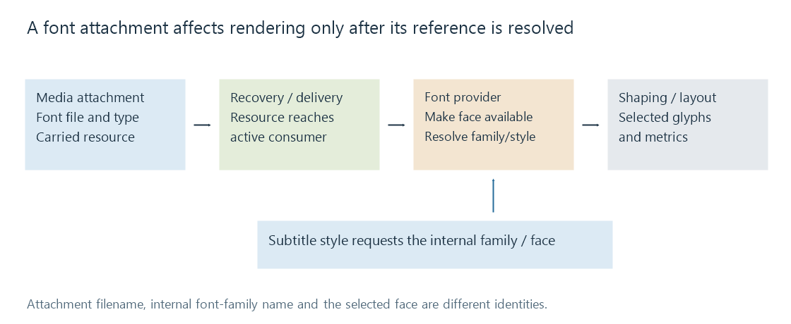

Subtitle font attachments
Subtitle font attachments bundle font resources with media so a supporting renderer can use the intended faces for styled text.
A styled subtitle can request a font that is not installed on the playback device. A font attachment bundles the resource with the media, giving a supporting consumer access to the intended face.
In Matroska, attachments are supporting files with identifying metadata and bytes. They are not timed subtitle tracks and do not have cue intervals.
Carrying the resource is the first boundary

The stages are distinct:
- The media source contains the font attachment.
- The selected processing route recovers or forwards the resource.
- The renderer's font provider makes the face available.
- The style's family/face request resolves to that face.
- Shaping and layout use its glyphs and metrics.
A track list containing ASS and an attachment list containing a font do not prove that every downstream client used it.
The attachment's filename and MIME type identify a carried file. Registered types such as font/ttf and font/otf describe font formats. The internal family/style names determine font matching; they need not equal the attachment's filename.
A container change can affect the two lists separately
| Output from an invented source | Subtitle result | Resource result |
|---|---|---|
| Remux retaining ASS and fonts | Styled event model retained | Intended faces remain carried |
| Remux retaining ASS but omitting attachments | Same timed events and family requests | Fallback may be needed |
| Extract standalone ASS only | Global styles and events retained | Fonts need separate delivery |
| Convert to simple SRT | Words and basic intervals can remain | The original face request may no longer be represented |
A font can also survive in an output container but become unused when the subtitle style that requested it was removed. Keeping bytes and maintaining their reference relationship are different requirements.
Matroska attachments explains the generic container mechanism. For subtitles, the practical result is whether the active renderer obtains the requested face.
Locate the consumer
When an Emby app renders text, its route needs usable subtitle data and font resources at the app's renderer. When the server renders text into video, the server's font provider needs them before composition.
Those are different resource destinations. An extraction or delivery path can preserve the source media perfectly and still fail to provide a font to the particular consumer drawing the sign.
See Also
- Matroska Attachments
- Subtitle font fallback
- Advanced SubStation Alpha subtitles (ASS)
- Subtitle extraction